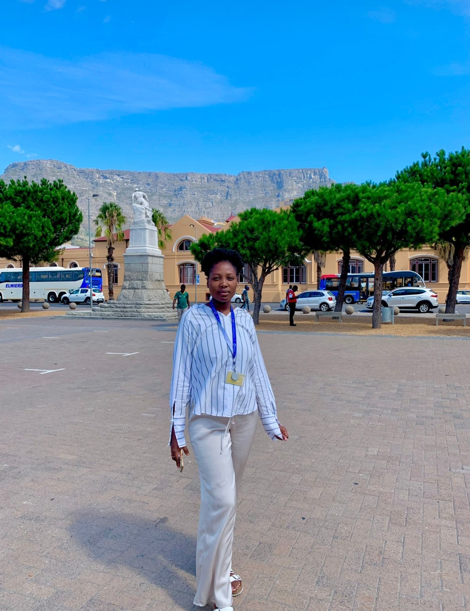
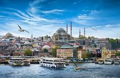
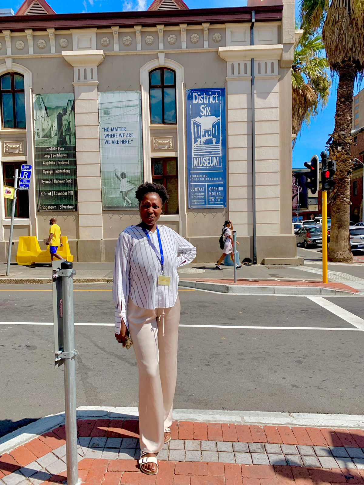
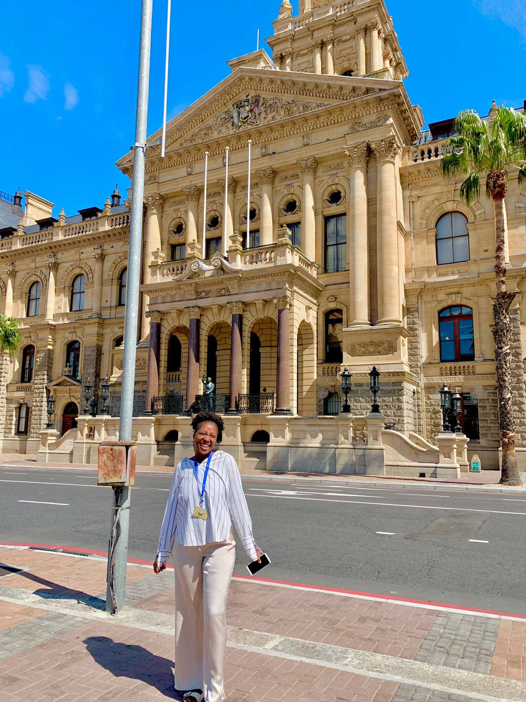
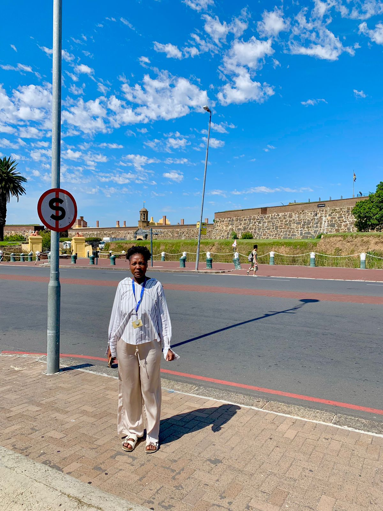

Akhona Mjikelo

Which City?
Istanbul

I would like to visit Galata Tower
I would like to vist the Grand Bazaar
I like their culture and their language
Foreign Language
I would like to visit Turkey
English
Turkish
Hello,my name is Akhona
Merhaba benim adim Akhona
Have a good day
Iyi günler
Thank you
Teşekkürler
Historical Places
District Six Museum
The District Six Foundation was established in 1989 and shortly after joined by the museum in 1994.
The District Six museum had been an old Methodist church.
During the Apartheid era, it was declared an white area.

City Hall
Nelson Mandela made his first free speech from a balcony at the Cape Town City Hall in 1990
It has always been used, until today, as a venue for music and the arts.
it served as the headquarters of the administration of Cape Town and the seat of its mayoralty

The Castle of Good Hope
The first stone was laid on 2 January 1666 and it was completed by April 1679
In 1936 the Castle of Good Hope was declared a national monument
The Castle of Good Hope was referred to as “Kui keip” (Stone Kraal) by the Khoi and sometimes “Citadel” by Dutch settlers
